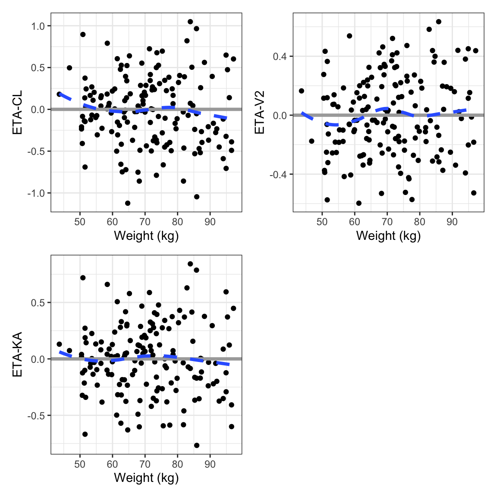
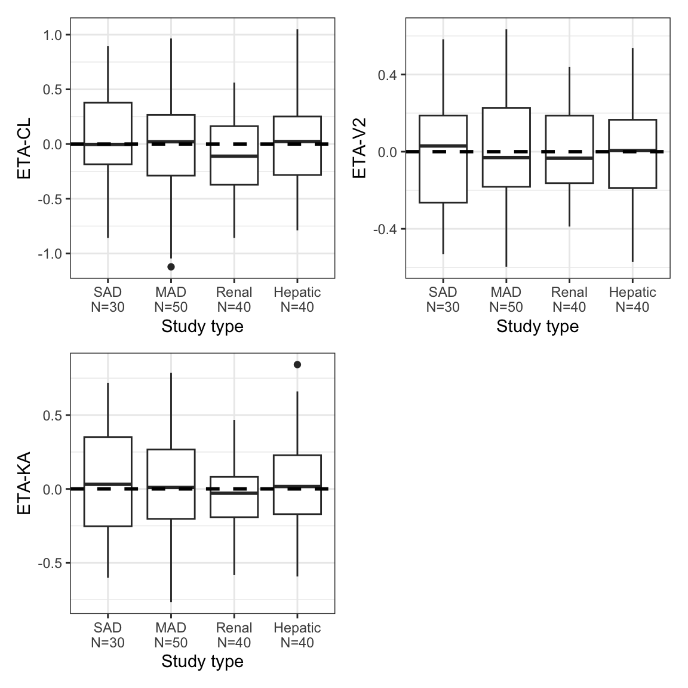
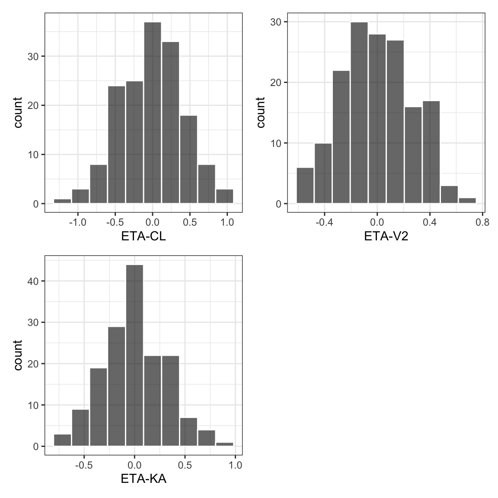
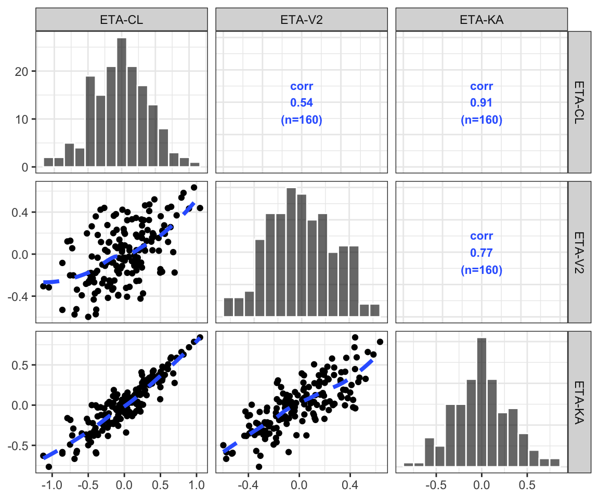

etas <- c(
"ETA1//ETA-CL",
"ETA2//ETA-V2",
"ETA3//ETA-KA"
)8.1 Setup
We start by defining a set of ETAs to use in the plots.
This is in the col-label format described earlier. We also set out a set of covariates that we can use for ETA diagnostics.
covs <- c(
"WT//Weight (kg)",
"ALB//Albumin (g/dL)",
"SCR//Creatinine (mg/dL)"
)8.2 Data used on this page
We are exclusively using a data set that is one row per individual
Preview the data used on this page
head(as.data.frame(id), n=3) C NUM ID SUBJ TIME SEQ CMT EVID AMT DV AGE WT CRCL ALB BMI AAG
1 NA 1 1 1 0 0 1 1 5 0 28.03 55.16 114.45 4.40 21.67 106.36
2 NA 17 2 2 0 0 1 1 5 0 34.67 51.74 100.54 3.88 23.85 61.79
3 NA 33 3 3 0 0 1 1 5 0 26.24 54.84 99.05 3.84 19.43 50.10
SCR AST ALT HT CP TAFD TAD LDOS MDV BLQ PHASE STUDY RF 102 IPRED
1 1.14 11.88 12.66 159.55 0 0 0 5 1 0 1 1 norm 1 0
2 0.98 15.09 27.44 147.27 0 0 0 5 1 0 1 1 norm 1 0
3 1.05 35.85 31.26 168.02 0 0 0 5 1 0 1 1 norm 1 0
CWRESI NPDE PRED RES WRES CL V2 KA ETA1 ETA2 ETA3
1 0 0 0 0 0 2.5927 40.287 1.4520 -0.075300 -0.184030 -0.095308
2 0 0 0 0 0 1.9339 32.925 1.6044 0.024467 -0.321810 -0.340470
3 0 0 0 0 0 3.2407 50.967 1.4195 -0.097942 0.056922 0.132150
DOSE STUDYc CPc
1 5 SAD normal
2 5 SAD normal
3 5 SAD normal8.3 ETA versus continuous [eta_cont]
Grouped by eta
eta_cont(id, x = covs, y = etas[2]) %>%
pm_grid()
Grouped by covariate
eta_cont(id, x = covs[1], y = etas) %>%
pm_grid(ncol = 2)
8.4 ETA by categorical [eta_cat]
eta_cat(id, x = "STUDYc//Study type", y = etas) %>%
pm_grid()
8.5 ETA histograms [eta_hist]
eta_hist(id, etas, bins = 10) %>%
pm_grid()
8.6 ETA pairs [eta_pairs]
eta_pairs(id, etas) 